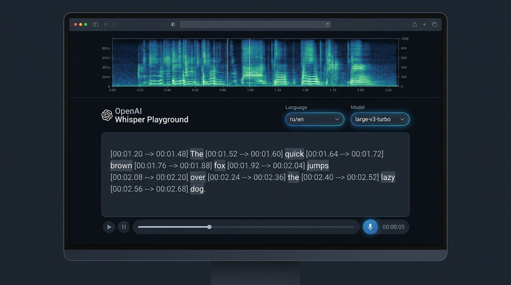
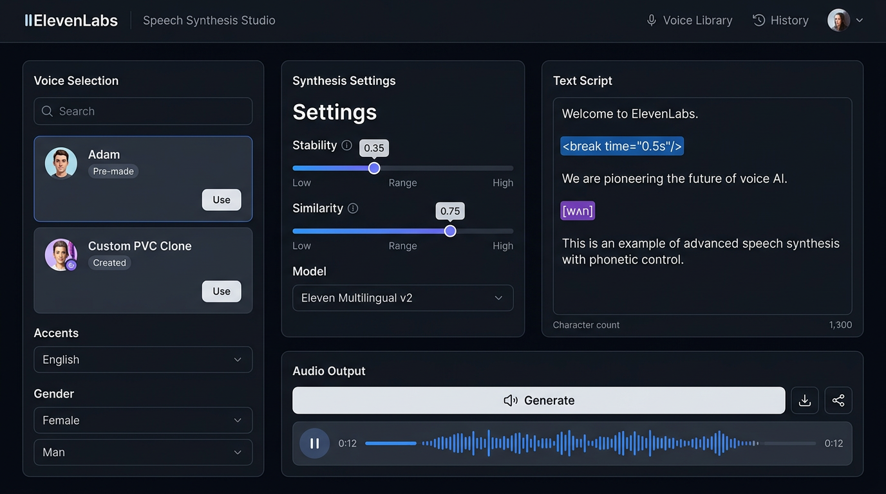
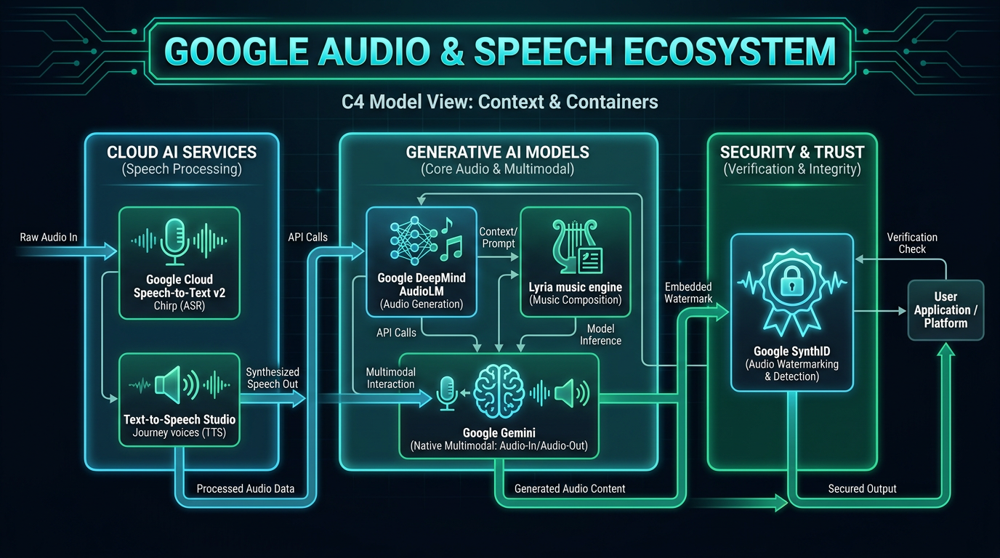
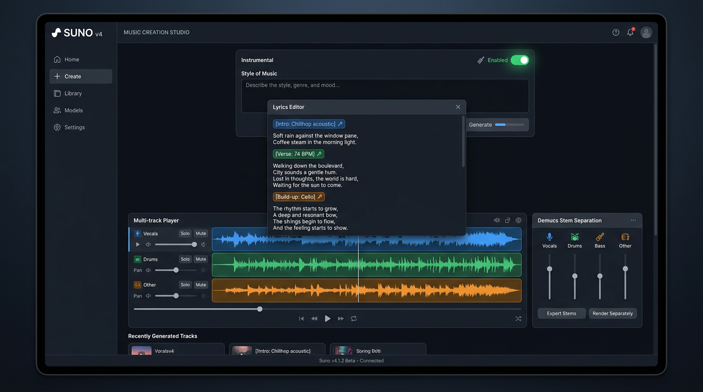
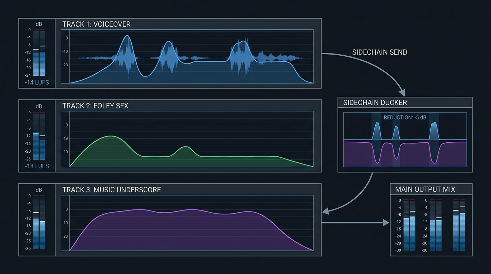
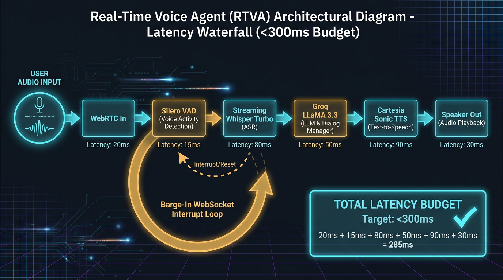

Синтез речи, Whisper, саунд-дизайн Foley и генерация музыки
От одномерных звуковых волн и мел-спектрограмм к дискретным нейрокодекам (EnCodec/DAC), пословным таймкодам Whisper, студиям ElevenLabs и Suno, звуковой экосистеме Google и синхронизированному мультитреку со Sidechain Ducking.
АКСИОМА 10/90 В ГЕНЕРАТИВНОМ ЗВУКЕ: Генерация сырой формы волны нейросетью — это лишь 10% успеха. Остальные 90% — это Voice Activity Detection (VAD), нормализация громкости LUFS, пословная привязка субтитров, защита от дипфейков, задержка менее 150 мс и сведение стемов в Python.
← → листать • N заметки спикера • G все слайды • F полный экран
Приветствие. Завершаем Модуль 2. Кинематограф и реклама на 50% состоят из звука. Плохой визуал зритель готов простить, но плохой или рассинхронизированный звук заставляет закрыть видео в первые 3 секунды.
Интерактивный хук • Слепой тест
Слепой тест: отличите студийный микрофон от ИИ 2026 года
Четыре аудиофрагмента профессионального уровня. Напишите в чат: какие из них записаны микрофоном вживую, а какие сгенерированы нейросетью?
Живое пианино, щеточки по малому барабану, пульсирующий контрабас.
КЛИП [D]
▶
Звонок в техподдержку
Диалог с задержкой 130 мс, перебивание собеседника, междометия «угу», «да-да».
Вопрос в чат: Напишите в чат, какие из 4 фрагментов — 100% нейросетевая генерация? Дать студентам 45 секунд на ответы.
GenAI Basics • Урок 06 • Речь и аудио AI02 / 24
Слушаем ответы в чате. Студенты часто думают, что джаз (C) или дыхание (A) точно настоящие. Раскрываем карты на следующем слайде: все 4 — чистый ИИ 2026 года!
Эволюция нейрозвука • 2020–2026
Все 4 клипа — 100% генерация ИИ! Хроника преодоления робота
Все 4 фрагмента были синтезированы нейросетями. За 6 лет аудиотехнологии прошли путь от синтезаторов навигаторов до живых речевых агентов.
2020–2021 • РОБОТИЗИРОВАННЫЙ ЗВОН
WaveNet & FastSpeech
Срез: Металлический фазовый шум, роботизированная интонация без пауз и эмоций, полоса пропускания 16 кГц.
2022–2023 • ПРОРЫВ РАСПОЗНАВАНИЯ
OpenAI Whisper & ElevenLabs v1
Срез: OpenAI Whisper решает задачу транскрибации; ElevenLabs вводит эмоциональную выразительность и клонирование.
2024–2025 • НЕЙРОКОДЕКИ И МУЗЫКА
Suno v3, Udio & EnCodec
Срез: Полноценные 3-минутные песни с вокалом и куплетами; текстовая генерация фоли-шумов (SFX); дискретные токены звука.
2026 • ГОЛОСОВЫЕ АГЕНТЫ ON-DEVICE
Cartesia Sonic, Whisper v3 & Suno v4
Срез: Задержка речевого цикла менее 150 мс, студийное качество 48 кГц, мгновенный перевод речи с сохранением оригинального тембра.
Вызов 2026 года: Вопрос естественности тембра закрыт. Главная битва идет за минимальную задержку диалога (<150 мс) и мультитрековое сведение без частотных конфликтов.
GenAI Basics • Урок 06 • Речь и аудио AI03 / 24
Показываем хронологию. Подчеркиваем: звук сложнее текста тем, что секунда аудио — это 44 100 отсчетов амплитуды.
Дорожная карта курса • Финал Модуля 2
Завершение мультимодальности: озвучивание немых роликов из L05
Модуль 2 переводит текстовые промпты в физический мир. В L04 мы зафиксировали кадры, в L05 оживили движение. Сегодня мы даем роликам голос, шумы и саундтрек.
M1 • ГОТОВО
База LLM
L01–L03: Промпты и API
L04 • ГОТОВО
Картинки
Промпты, C2_rain, пэкшот
L05 • ГОТОВО
Видео
I2V, камеры, монтаж
L06 • ЗДЕСЬ
Речь и звук
TTS, Whisper, Foley, саундтрек
M3 • ДАЛЕЕ
Экосистема
L07: Copilot, M365 и Dev
M4–M6
Агенты и код
L08–L16: MCP, архитектура
ЧТО МЫ ПОЛУЧИЛИ ИЗ УРОКА 05
Немые 5-секундные видеодубли
Курьер Glovo под дождем (shot2_bike_rain.mp4) и вращающаяся кружка кофе (packshot_360.mp4) безупречны визуально, но кинематографически мертвы без звука.
ЧТО L06 ДАЕТ ДЛЯ ПОЛНОГО ПРОДАКШЕНА
3-слойный акустический саундтрек
1. Закадровый голос: синтез речи диктора с точной артикуляцией. 2. Фоли SFX: брызги луж, шелест дождевика, трещотка втулки велосипеда. 3. Музыка: атмосферный фон с автоматическим приглушением (ducking).
GenAI Basics • Урок 06 • Речь и аудио AI04 / 24
Показываем преемственность. Модуль 2 логически закрывается: от текста к картинке, затем к видео, и наконец к полному аудиовизуальному продакшену.
Физика звука и нейросети • От волны к токенам
Природа звука: форма волны, мел-спектрограммы и нейрокодеки
Звук — одномерная волна давления воздуха. Прямая подача в авторегрессионный трансформер переполнила бы контекстное окно за секунды.
2. ПРЕОБРАЗОВАНИЕ ФУРЬЕ (STFT)
Мел-спектрограммы (2D)
Нарезка на окна по 25 мс с логарифмической шкалой частот Mel. Именно это принимает энкодер Whisper.
3. НЕЙРОКОДЕКИ (EnCodec / DAC)
RVQ: всего ~50 токенов/сек
Остаточное векторное квантование: сжимает 48 кГц звук в дискретные целочисленные токены, понятные обычным языковым моделям!
GenAI Basics • Урок 06 • Речь и аудио AI05 / 24
Разбираем архитектуру нейрокодеков. Обратите внимание на схему слева: RVQ Codebooks квантуют остаточную ошибку предыдущего слоя, сжимая студийный звук в компактную цепочку токенов.
Speech-to-Text (STT) • Архитектура Whisper
OpenAI Whisper: Encoder-Decoder и пословные таймкоды субтитров
Стандарт распознавания речи в индустрии: от 30-секундных мел-спектрограмм к пословной синхронизации субтитров.
АУДИО-ЭНКОДЕР (СВЕРТКИ + ATTENTION)
30-секундные чанки
Принимает 80/128-канальную мел-спектрограмму. Две 1D-свертки со страйдом 2 сжимают временную ось в 4 раза, после чего стек Transformer-блоков извлекает акустические эмбеддинги.
ТЕКСТОВЫЙ ДЕКОДЕР (СПЕЦТОКЕНЫ)
Префиксные промпты задачи
Авторегрессионный декодер управляется токенами: <|startoftranscript|>, язык <|ru|>, задача <|transcribe|> или <|translate|> (прямой перевод на английский).
WORD-LEVEL TIMESTAMPS
Субтитры без ручной разметки
Параметр word_timestamps=True анализирует матрицы Cross-Attention и методом Dynamic Time Warping вычисляет точные миллисекунды начала и конца каждого слова для монтажа.
Инженерная ценность: Пословные таймкоды позволяют видеомонтажному скрипту на Python автоматически нарезать речь на субтитры .srt и синхронизировать анимацию титров на экране.
GenAI Basics • Урок 06 • Речь и аудио AI06 / 24
Объясняем двухбашенную структуру Whisper. Главное для видеопродакшна — word_timestamps, без которых невозможно автоматически генерировать кинематографические титры.
Whisper в продакшене • Устранение сбоев
Кабинет Whisper Playground: борьба с зацикливанием и Silero VAD
Почему Whisper циклится в тишине и как связка с Silero VAD и CTranslate2 обеспечивает безотказный продакшен.

ПРОБЛЕМА: ПЕТЛИ ПОВТОРОВ В ТИШИНЕ
Галлюцинации Repetition Loops
Когда диктор молчит, авторегрессионный декодер Whisper цепляется за шум и входит в бесконечный цикл: «Спасибо за просмотр! Ставьте лайк...».
РЕШЕНИЕ: SILERO VAD (1 МБ НЕЙРОСЕТЬ)
Предварительная вырезка пауз
Voice Activity Detection: за 2 мс сканирует файл, вырезает паузы и тишину. Whisper получает только гарантированную речь, что на 100% исключает зацикливание.
РАНТАЙМ: FASTER-WHISPER (CTRANSLATE2)
Ускорение в 4 раза на C++
Квантование INT8/FP16 сокращает расход видеопамяти на 50% и ускоряет транскрибацию в 4 раза по сравнению с ванильным PyTorch.
GenAI Basics • Урок 06 • Речь и аудио AI07 / 24
Смотрим на скриншот кабинета Whisper: сверху спектрограмма, выбор модели large-v3-turbo, пословные таймкоды. Справа объясняем Silero VAD — обязательный компонент продакшн-конвейера.
Синтез речи (TTS) • Кабинет ElevenLabs Studio
Ландшафт TTS 2026: студийный ElevenLabs против сверхбыстрых агентов
Рынок синтеза речи разделился на студийных лидеров, ультранизкую задержку для ботов и локальные $0 модели.

1. СТУДИЙНЫЙ ЭТАЛОН (ElevenLabs v2)
48 кГц, 32+ языка, эмоции
Эталон для озвучки видео и дубляжа. В кабинете слева: выбор голоса и клонов; в центре: ползунки Stability и Similarity; справа: текст с SSML и фонетикой. Задержка ~350 мс.
2. ДИАЛОГОВЫЕ АГЕНТЫ (Cartesia Sonic)
Задержка 135 мс до первого байта
Архитектура State-Space Model. Создана специально для телефонных ботов и мгновенных ответов без задержки.
3. ЛОКАЛЬНЫЙ OPEN-SOURCE (Kokoro-82M)
82 млн параметров, $0 API cost
Лицензия Apache 2.0. Работает локально на CPU и в браузере через WebAssembly без передачи данных в облако.
GenAI Basics • Урок 06 • Речь и аудио AI08 / 24
Разбираем интерфейс ElevenLabs: обращаем внимание студентов на ползунки Stability и Similarity Boost, а также на поле Text Script с фонетическими тегами.
Режиссура речи • Промптинг TTS
Управление диктором: пунктуация, SSML-теги и ползунки Stability
Как управлять дыханием, паузами и эмоциональным накалом искусственного голоса без искажений.
ПУНКТУАЦИЯ КАК НОТНАЯ ГРАМОТА
Вдохи, паузы и акценты
• Многоточие (...): принуждает модель сделать естественный вдох и замедлить темп.
• Длинное тире (—): создает смысловую паузу перед кульминацией фразы.
• ЗАГЛАВНЫЕ БУКВЫ: добавляют эмоциональное ударение и повышение тона.
• SSML & IPA: тег <break time="0.5s"/> и фонетическая транскрипция для брендов: <phoneme alphabet="ipa" ph="ɡloʊvoʊ">Glovo</phoneme>.
КАЛИБРОВКА ПОЛЗУНКОВ ELEVENLABS
Stability: актерская игра vs стабильность
• Stability = 0.30–0.40: Высокая вариативность, шепот, драматические паузы, эмоциональный накал (кинотрейлеры, сторителлинг).
• Stability = 0.80–0.90: Монотонная, академическая подача (юридические дисклеймеры, документация, банковские IVR).
• Similarity Boost = 0.75: Высокая точность оригинального тембра без появления фазовых артефактов микрофона.
Золотое правило: Никогда не ставьте Stability на 1.0 (голос превратится в бездушного робота) и ниже 0.2 (появятся случайные фальцеты и срывы голоса). Оптимум для рекламы — 0.35–0.45.
GenAI Basics • Урок 06 • Речь и аудио AI09 / 24
Объясняем разницу между текстом для чтения глазами и текстом для диктора. Знаки препинания здесь работают как указатели дыхания.
Клонирование голоса • Технологии
Клонирование голоса: Instant (d-векторы) vs Professional (LoRA PVC)
Два принципиально разных подхода к воспроизведению тембра человека: быстрый zero-shot против студийного обучения.
INSTANT VOICE CLONING (IVC / ZERO-SHOT)
60 секунд аудио • d-вектор спикера
• Как работает: Сверточная сеть извлекает 512-мерный вектор эмбеддинга спикера и подмешивает его в базовую модель при генерации.
• Скорость и стоимость: Готово за 5 секунд, $0 затрат на обучение.
• Ловушка: Сходство ~80%. Если исходный сэмпл записан на плохой микрофон в комнате с эхом — это эхо навсегда впечатается во все генерации!
PROFESSIONAL VOICE CLONING (PVC / FINE-TUNING)
45 минут студии • Дообучение весов LoRA
• Как работает: Полный цикл дообучения адаптеров весов (LoRA) на GPU в течение 2–4 часов на чистых студийных записях.
• Результат: 98% сходства, способность шептать, кричать и сохранять тончайшие обертоны и форманты живого человека.
• Стандарт: Требует верификации согласия владельца голоса через Voice Captcha.
GenAI Basics • Урок 06 • Речь и аудио AI10 / 24
Сравниваем подходы. Для демо подходит Instant, но в коммерческий продакшен пускают только Professional Voice Cloning на чистом звуке.
Безопасность и этика • Аудио-биометрия
Аудио-безопасность: векторы угроз, Voice Captcha и SynthID
Как защитить бизнес от CEO-fraud, а голос от несанкционированного клонирования.
ВЕКТОРЫ УГРОЗ 2026
Мошенничество и дипфейки
• CEO Voice Fraud: Звонки финансовым директорам с имитацией голоса руководителя.
• Обход биометрии: Атаки на банковские контакт-центры с подтверждением платежей голосом.
• Фейковые доказательства: Синтез записей с компроматом на публичных лиц.
DYNAMIC VOICE CAPTCHA
Защита от чужих аудиозаписей
Платформа генерирует случайную динамическую фразу с текущим таймстемпом. Владелец обязан зачитать ее вслух в камеру. Украденная запись не пройдет проверку!
IN-BAND ВОТЕРМАРКИНГ
Google SynthID & PerTh
Микроскопическая фазовая модуляция гармоник. Человек ее не слышит, но спектральный детектор гарантированно выявляет ИИ даже после сжатия в MP3 и наложения шума улицы!
GenAI Basics • Урок 06 • Речь и аудио AI11 / 24
Этика и безопасность. Подчеркиваем: SynthID не слышен уху, но защищает авторские права и юридическую чистоту контента.
Корпоративное управление • Матрица рисков
Blast Radius в аудио: Зеленая, Желтая и Красная зоны
Четкие границы допустимого применения нейрозвука в enterprise-проектах.
• Голосовые боты первой линии поддержки (обязателен аудиодисклеймер: «С вами говорит AI»).
• Коммерческие рекламные ролики (обязателен аудит звукорежиссера на артефакты). Риск репутации: средний. Контроль человека.
КРАСНАЯ ЗОНА (СТРОГИЙ ЗАПРЕТ)
Клонирование без согласия и суд
• Клонирование голоса живых людей без письменного юридического согласия.
• Генерация звонков от экстренных служб.
• Обход голосовой биометрии банков. Категорически запрещено. Уголовная ответственность.
GenAI Basics • Урок 06 • Речь и аудио AI12 / 24
Повторяем концепцию Blast Radius для аудио: где ИИ можно запускать на автомате, а где необходим жесткий аудит.
Экосистема вендоров • Архитектура Google
Что есть у Google со звуком: Cloud Studio, DeepMind и Gemini Native Audio
От классических облачных сервисов речи к фундаментальным моделям DeepMind и прямому нативному аудио в Gemini.

1. GOOGLE CLOUD SPEECH STUDIO
Journey Voices & Chirp (USM 2B)
TTS: Journey и Studio Voices — студийные 48 кГц голоса с тонкой SSML-настройкой. ASR: Модель Chirp на базе 2-миллиардной Universal Speech Model распознает речь на 100+ языках в сложной акустике.
2. DEEPMIND AUDIO & LYRIA MUSIC
SoundStream, AudioLM & Lyria
DeepMind создал SoundStream (пионер RVQ нейрокодеков) и Lyria — флагманский движок генерации музыки (лежит в основе YouTube Dream Track и MusicFX).
3. GEMINI NATIVE MULTIMODAL AUDIO
Прямое Audio-In ➔ Audio-Out
Революция без каскада: Gemini воспринимает звук напрямую без текстового посредника — слышит сарказм, смех, шум улицы и отвечает нативным голосом! Плюс защита SynthID.
GenAI Basics • Урок 06 • Речь и аудио AI13 / 24
Специальный разбор технологий Google: от инфраструктурного Cloud Speech до фундаментальных моделей DeepMind и прямого аудио Gemini.
Практический R&D кейс • Creator Tools
Speech-to-Speech и дубляж на 100+ языков с сохранением тембра
Как устроен конвейер локализации видео для YouTube-авторов: управление слоговым бюджетом и фазовый вокодер.
ЭТАП 1: ТАЙМИНГИ И РЕЧЬ
Whisper + VAD
Извлечение слов с точными временными границами и чистка пауз для исключения смещения монтажа.
ЭТАП 2: БЮДЖЕТ СЛОГОВ
LLM Syllable Budget
Промпт обязывает модель переводить с жестким ограничением числа слогов, предотвращая расползание хронометража.
ЭТАП 3: ТЕМБР СПИКЕРА
Voice Conversion
Синтез на целевом языке с сохранением оригинальных формант, высоты тона и дыхания автора.
ЭТАП 4: ПОДГОНКА В КАДР
Elastic Time-Stretch
Фазовый вокодер (Phase Vocoder) сжимает темп речи на ±15% без изменения высоты тона под склейки видеоряда.
Результат: Зритель в Бразилии или Германии слышит голос автора на своем языке с идеальным попаданием в монтажные склейки видеоряда!
GenAI Basics • Урок 06 • Речь и аудио AI14 / 24
Делимся реальным R&D-опытом Creator Tools. Главный вызов — разная длина языков: фраза на немецком на 25% длиннее английской.
Экватор занятия • 5 минут отдыха
Перезагрузка слухового аппарата
Слуховое восприятие требует колоссальных энергетических затрат мозга. Отключите звук, выпейте воды, дайте ушам отдохнуть.
05:00
ВО ВТОРОЙ ПОЛОВИНЕ УРОКА:
Генерация шумов Foley (ElevenLabs SFX) • Звуковая матрица сториборда Giant Stories • Музыка в Suno v4 • Сведение 3 стемов со Sidechain Ducking на Python • Голосовые агенты реального времени (<300 мс).
GenAI Basics • Урок 06 • Речь и аудио AI15 / 24
Запускаем таймер. Строго отдых — никаких заданий в чат. Спикер и слушатели перезагружаются перед практической второй частью.
Sound Effects (SFX AI) • Кабинет ElevenLabs SFX
Генерация фоли-шумов: предметный звук из текста по 3-слотовой формуле
Больше не нужно искать звуки в стоковых библиотеках. Модели генерируют физические шумы по детальному описанию материалов.
Bicycle rubber tires splashing violently through a deep rainwater puddle on wet cobblestone, fine water spray, quiet evening city background hum, cinema foley
Принцип киноинженерии: Саунд-дизайн проектируется до начала монтажа. Каждый шот имеет точную акустическую партитуру из двух стемов: предметных шумов и музыкального хука.
GenAI Basics • Урок 06 • Речь и аудио AI17 / 24
Разбираем матрицу из 10-серийного проекта Giant Stories. Показываем, что звук не накладывается наугад, а жестко расписан по таймкодам.
Генерация музыки • Кабинет Suno v4 Studio
Музыкальный продакшен: тумблер Instrumental, структурные теги и Demucs
Как генерировать управляемый фоновый саундтрек без конфликтов с голосом диктора.

ЖЕЛЕЗНОЕ ПРАВИЛО: INSTRUMENTAL ВКЛЮЧЕН
Никакого вокала под диктора!
Если в фоновой музыке звучит сгенерированный вокал, он немедленно вступит в частотный конфликт с речью диктора, сделав слова неразборчивыми.
ТЕГИ РАЗМЕТКИ В ОКНЕ ТЕКСТА (LYRICS)
Управление структурой аранжировки
Даже в инструментальном режиме пишем: [Intro: Chillhop acoustic] ➔ [Verse: 74 BPM] ➔ [Build-up: Cello] ➔ [Outro: Fade out].
РАЗДЕЛЕНИЕ НА СТЕМЫ (DEMUCS v4)
Изоляция дорожек в один клик
Разбивка трека на 4 изолированных файла: барабаны, бас, инструменты и вокал для независимой регулировки громкости.
GenAI Basics • Урок 06 • Речь и аудио AI18 / 24
Смотрим на кабинет Suno v4: сверху тумблер Instrumental Enabled, окно Lyrics с тегами, внизу мультитрек и фейдеры разделения стемов Demucs.
Сведение звука • Стандарты LUFS
Сведение 3 стемов и Sidechain Ducking: автоматическое приглушение музыки
Как собрать голос диктора, фоли-шумы и музыку в сбалансированный мастер без цифрового клиппинга.

СТЕМ 1 • ДИКТОРСКАЯ РЕЧЬ
-14 LUFS (Пики не выше -1.0 dBFS)
Центральный моно-канал, срез частот ниже 80 Гц для удаления низкочастотного гула микрофона.
СТЕМ 2 • ФОЛИ SFX
-18 LUFS (Стерео-панорама)
Синхронизация с видео: пик брызг колеса совпадает с кадром наезда на лужу.
СТЕМ 3 • МУЗЫКА С SIDECHAIN DUCKING
Автоматическая просадка на -5 дБ
В паузах музыка звучит на -18 LUFS. Как только звучит голос, автоматика приглушает музыку до -23 LUFS. Реализуется в Python через библиотеку pydub.
GenAI Basics • Урок 06 • Речь и аудио AI19 / 24
Объясняем Sidechain Ducking по схеме слева: огибающая дикторского голоса управляет громкостью фоновой музыки, исключая кашу в миксе.
Интерактивный ИИ • Voice Agents
Голосовые агенты реального времени: бюджет задержки <300 мс и Barge-In
Почему стандартные REST API неприменимы для диалога и как строится потоковый WebRTC-пайплайн.

РАСЧЕТ БЮДЖЕТА ЗАДЕРЖКИ: 285 МС
Укладываемся в порог восприятия
1. Вход аудио WebRTC: 20 мс
2. Детекция конца речи Silero VAD: 15 мс
3. Распознавание речи Whisper Turbo: 80 мс
4. Время до 1-го токена Groq LLaMA 3.3: 50 мс
5. Потоковый синтез Cartesia Sonic: 90 мс
6. Буфер вывода в динамик: 30 мс
ОБРАБОТКА ПЕРЕБИВАНИЯ (BARGE-IN)
Мгновенный обрыв генерации
Если пользователь заговорил поверх агента, локальный VAD посылает сигнал сброса по WebSocket, сервер мгновенно отменяет генерацию, и динамик замолкает за 20 мс.
GenAI Basics • Урок 06 • Речь и аудио AI20 / 24
Разбираем диаграмму водопада задержек. Человек воспринимает задержку выше 300 мс как зависание телефонной линии. Barge-in — обязательное требование к живому диалогу.
Практика в коде • Python API Automation
Автоматизация в Python: извлечение таймкодов Whisper и сведение стемов
Готовый пайплайн в Colab-ноутбуке: от транскрибации до автоматического наложения звука на видео.
БЛОК 1: ПОСЛОВНЫЕ ТАЙМКОДЫ WHISPER
import whisper
model = whisper.load_model("large-v3-turbo")
result = model.transcribe("voice.wav", word_timestamps=True)
for segment in result["segments"]:
for word in segment["words"]:
print(f"[{word['start']:.2f}s -> {word['end']:.2f}s] {word['word']}")
Ссылка на Colab: Ноутбук notebooks/L06_Speech_and_Audio_AI_Pipeline.ipynb запускается за $0, содержит синтетические генераторы тестовых стемов и собирает итоговое видео с озвучкой.
GenAI Basics • Урок 06 • Речь и аудио AI21 / 24
Показываем код из Colab. Подчеркиваем простоту интеграции: Whisper дает массив границ слов, а pydub сводит треки в пару строк.
Контроль качества • Audio QA
Чеклист контроля качества звука: 4 критических дефекта
Инженерный чеклист аудита перед отправкой аудиоматериалов в продакшен.
1. ЦИФРОВОЙ КЛИППИНГ
Пики выше -1.0 dBFS
Симптом: Треск и хрип на громких согласных. Лечение: Лимитер на мастер-шине с потолком -1.0 dBFS.
2. ФАЗОВЫЙ ШУМ (3 кГц)
Гребенчатый телефонный фильтр
Симптом: Металлический звон нейросети. Лечение: Переключение вокодера на 48 кГц и срез резонансов эквалайзером.
3. ДРЕЙФ ИНТОНАЦИИ
Случайные скачки эмоций
Симптом: Диктор резко переходит с шепота на крик. Лечение: Повышение ползунка Stability до 0.45–0.50.
4. РАССИНХРОН ЛИПСИНКА
Задержка губ > 40 мс
Симптом: Губы смыкаются раньше звука согласных. Лечение: Сдвиг дорожки по таймкодам Whisper в видеоредакторе.
GenAI Basics • Урок 06 • Речь и аудио AI22 / 24
Инженерный аудит качества. Чеклист audio_qa.md обязателен к заполнению в домашнем задании.
Практическое задание • Домашка №6
Домашнее задание №6: создание 3-слойного саундтрека для ролика из L05
Возьмите ваш 5-секундный видеоролик из Урока 05 и создайте для него полноценное звуковое сопровождение.
ЧТО НЕОБХОДИМО СДЕЛАТЬ
3 изолированных аудиостема
1. Стем 1 (Голос диктора): 1 фраза в ElevenLabs / Cartesia / Kokoro.
2. Стем 2 (Foley SFX): предметный шум по 3-слотовой формуле в ElevenLabs SFX.
3. Стем 3 (Музыка): инструментальный трек в Suno v4 / Udio с приглушением под голос.
4. Свести дорожки с видеороликом в единый файл final_video_with_audio.mp4.
Сдача: Добавить ihar_rubanovich@epam.com в коллабораторы вашего GitHub-репозитория. Ревью в течение 48 часов.
GenAI Basics • Урок 06 • Речь и аудио AI23 / 24
Объясняем ДЗ. Главное — сдать все 3 изолированных стема и готовый смонтированный ролик.
Финал Модуля 2 • Переход к разработке ПО
Итоги Модуля 2: 4 инженерных закона звука и анонс Урока 07 (Copilot)
Модуль «Мультимодальность» завершен! Мы научились создавать картинки, видео и звук студийного качества.
4 ИНЖЕНЕРНЫХ ЗАКОНА ЗВУКА В GENAI
Главные выводы занятия
1. VAD First: Никогда не отправляйте сырое аудио в Whisper без Silero VAD.
2. Пунктуация для дыхания: Управляйте паузами и темпом диктора знаками препинания.
3. Instrumental для видео: Запрещайте вокал в фоновой музыке под речь диктора.
4. Sidechain Ducking: Музыка обязана проседать на -5 дБ, когда звучит голос.
АНОНС МОДУЛЯ 3 • УРОК 07: COPILOT ECOSYSTEM
ИИ в разработке программного обеспечения
• Microsoft 365 Copilot & GitHub Copilot: архитектура Semantic Index и Graph.
• Agent Mode в VS Code: автономное решение багов и терминальные агенты.
• Реальный кейс: EPAM CodeMie @ Dawn Foods (ускорение SDLC на 35%).
GenAI Basics • Урок 06 • Речь и аудио AI24 / 24
Поздравляем студентов с завершением Модуля 2! Открываем микрофон для вопросов.